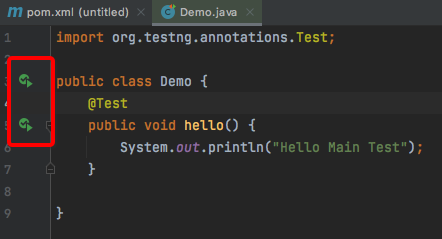
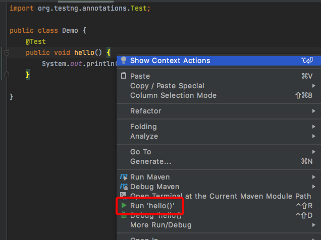
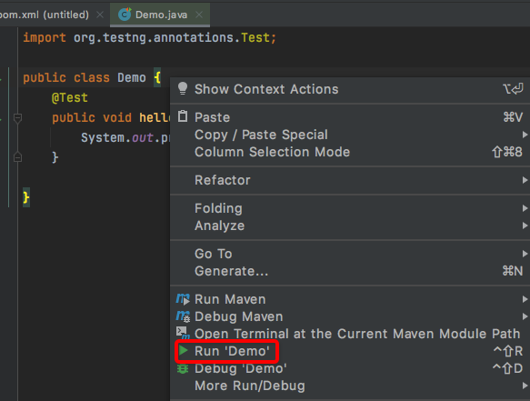
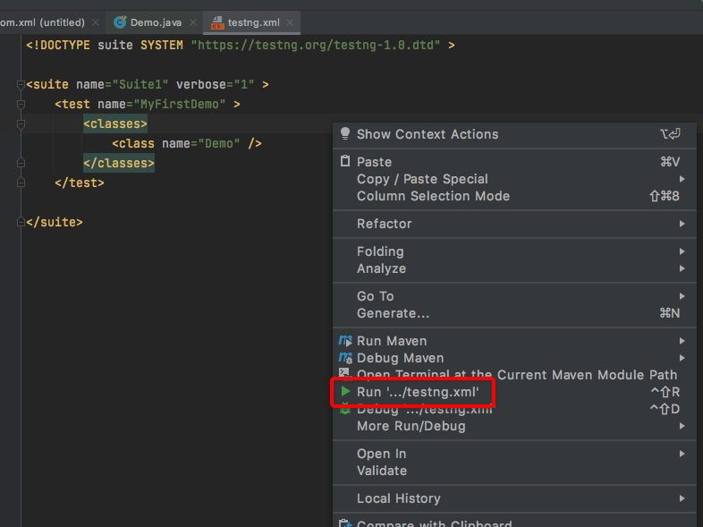
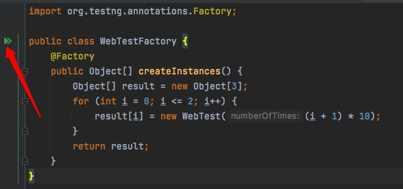
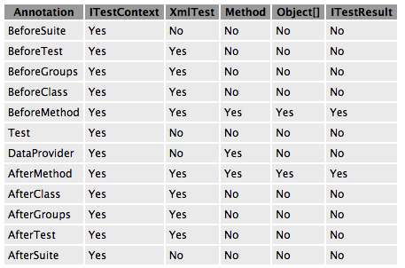
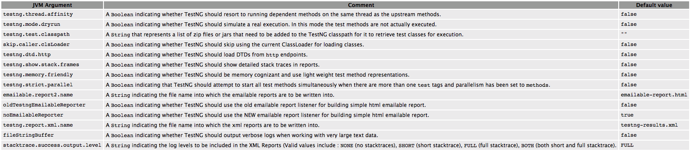

单篇长文TestNG从入门到精通¶

简介¶
TestNG是Test Next Generation的缩写，它的灵感来自于JUnit和NUnit，在它们基础上增加了很多很牛的功能，比如说：
注解。
多线程，比如所有方法都在各自线程中，一个测试类一个线程等。
验证代码是否多线程安全。
灵活的测试配置。
支持数据驱动（@DataProvider）。
支持参数化。
强大的执行机制（不需要TestSuite）。
能跟各种工具结合（比如IDEA、Maven等）。
内嵌BeanShell。
提供运行时和日志的JDK函数（不需要添加dependencies）。
提供应用服务器测试依赖的方法。
一句话总结就是，TestNG强大到能覆盖所有测试类型：单元测试、功能测试、端到端测试、集成测试等等等。
一个简单的示例如下：
package example1;
import org.testng.annotations.*;
public class SimpleTest {
@BeforeClass
public void setUp() {
// code that will be invoked when this test is instantiated
}
@Test(groups = { "fast" })
public void aFastTest() {
System.out.println("Fast test");
}
@Test(groups = { "slow" })
public void aSlowTest() {
System.out.println("Slow test");
}
}
setUp()会在测试类创建后，测试方法执行前运行。
测试方法名字可以任意的，TestNG通过@Test注解来标识。
可以把测试方法按group分组。
然后使用xml来配置运行策略：
<project default="test">
<path id="cp">
<pathelement location="lib/testng-testng-5.13.1.jar"/>
<pathelement location="build"/>
</path>
<taskdef name="testng" classpathref="cp"
classname="org.testng.TestNGAntTask" />
<target name="test">
<testng classpathref="cp" groups="fast">
<classfileset dir="build" includes="example1/*.class"/>
</testng>
</target>
</project>
使用ant调用（下面第2节给出了最新的运行方式）：
c:> ant
Buildfile: build.xml
test:
[testng] Fast test
[testng] ===============================================
[testng] Suite for Command line test
[testng] Total tests run: 1, Failures: 0, Skips: 0
[testng] ===============================================
BUILD SUCCESSFUL
Total time: 4 seconds
最后就能看报告了：
start test-output\index.html (on Windows)
如何运行TestNG¶
除了前面提到的ant调用，更常见的运行TestNG的方式是以下两种：
IDEA
Maven
IDEA¶
在IDEA中运行TestNG第①种方式是点击方法或类前面的小箭头：

第②种方式是在方法或类内部点击右键：


第③种方式是使用testng.xml，IDEA可以右键testng.xml来运行，在文件名和文件内部点击均可：

testng.xml支持很多种配置，比如配置测试类：
<!DOCTYPE suite SYSTEM "https://testng.org/testng-1.0.dtd" >
<suite name="Suite1" verbose="1" >
<test name="Nopackage" >
<classes>
<class name="NoPackageTest" />
</classes>
</test>
<test name="Regression1">
<classes>
<class name="test.sample.ParameterSample"/>
<class name="test.sample.ParameterTest"/>
</classes>
</test>
</suite>
配置测试包：
<!DOCTYPE suite SYSTEM "https://testng.org/testng-1.0.dtd" >
<suite name="Suite1" verbose="1" >
<test name="Regression1" >
<packages>
<package name="test.sample" />
</packages>
</test>
</suite>
配置组和方法：
<!DOCTYPE suite SYSTEM "https://testng.org/testng-1.0.dtd" >
<suite name="Suite1" verbose="1" >
<test name="Regression1">
<groups>
<run>
<exclude name="brokenTests" />
<include name="checkinTests" />
</run>
</groups>
<classes>
<class name="test.IndividualMethodsTest">
<methods>
<include name="testMethod" />
</methods>
</class>
</classes>
</test>
</suite>
默认TestNG会按xml顺序执行，可以设置
preserve-order为false变成随机顺序：
<!DOCTYPE suite SYSTEM "https://testng.org/testng-1.0.dtd" >
<suite name="Suite1" verbose="1" >
<test name="Regression1" preserve-order="false">
<classes>
<class name="test.Test1">
<methods>
<include name="m1" />
<include name="m2" />
</methods>
</class>
<class name="test.Test2" />
</classes>
</test>
</suite>
Maven¶
官方教程给出了命令行执行TestNG：
java org.testng.TestNG testng1.xml [testng2.xml testng3.xml ...]
实际调用是调不通的，可以借助Maven来实现。
先在pom.xml添加：
<build>
<plugins>
<plugin>
<groupId>org.apache.maven.plugins</groupId>
<artifactId>maven-surefire-plugin</artifactId>
<version>2.19.1</version>
<configuration>
<suiteXmlFiles>
<suiteXmlFile>testng.xml</suiteXmlFile>
</suiteXmlFiles>
</configuration>
</plugin>
</plugins>
</build>
然后执行mvn clean test命令就行啦。
测试方法和测试类¶
使用了@Test注解的方法就是测试方法，包含测试方法的类就是测试类。比如：
package example1;
import org.testng.annotations.*;
public class SimpleTest {
@BeforeClass
public void setUp() {
// code that will be invoked when this test is instantiated
}
@Test(groups = { "fast" })
public void aFastTest() {
System.out.println("Fast test");
}
@Test(groups = { "slow" })
public void aSlowTest() {
System.out.println("Slow test");
}
}
@Test也能放在测试类上面，这样测试类下的所有方法都是测试方法，比如：
@Test
public class Test1 {
public void test1() {
}
public void test2() {
}
}
而且可以在测试类和测试方法上同时使用@Test，比如给某个Test加入分组：
@Test
public class Test1 {
public void test1() {
}
@Test(groups = "g1")
public void test2() {
}
}
有个点需要注意的是@Test注解的测试方法，默认是会忽略返回值的，除非在testng.xml配置：
<suite allow-return-values="true">
or
<test allow-return-values="true">
测试组¶
测试组其实就是给测试方法打标记，比如冒烟测试用例和功能测试用例：
public class Test1 {
@Test(groups = { "functest", "checkintest" })
public void testMethod1() {
}
@Test(groups = {"functest", "checkintest"} )
public void testMethod2() {
}
@Test(groups = { "functest" })
public void testMethod3() {
}
}
如果只配置functest，就会执行全部测试方法：
<test name="Test1">
<groups>
<run>
<include name="functest"/>
</run>
</groups>
<classes>
<class name="example1.Test1"/>
</classes>
</test>
如果只配置checkintest，就会只执行前面2个方法：
<test name="Test1">
<groups>
<run>
<include name="checkintest"/>
</run>
</groups>
<classes>
<class name="example1.Test1"/>
</classes>
</test>
除了指定完整name，也可以使用正则表达式：
@Test
public class Test1 {
@Test(groups = { "windows.checkintest" })
public void testWindowsOnly() {
}
@Test(groups = {"linux.checkintest"} )
public void testLinuxOnly() {
}
@Test(groups = { "windows.functest" )
public void testWindowsToo() {
}
}
<test name="Test1">
<groups>
<run>
<include name="windows.*"/>
</run>
</groups>
<classes>
<class name="example1.Test1"/>
</classes>
</test>
进一步，测试组除了include测试方法，还可以exclude：
<test name="Test1">
<classes>
<class name="example1.Test1">
<methods>
<include name=".*enabledTestMethod.*"/>
<exclude name=".*brokenTestMethod.*"/>
</methods>
</class>
</classes>
</test>
还有一个办法是使用@Test和@Before/After的
enabled属性。
测试组也能进行嵌套：
<test name="Regression1">
<groups>
<define name="functest">
<include name="windows"/>
<include name="linux"/>
</define>
<define name="all">
<include name="functest"/>
<include name="checkintest"/>
</define>
<run>
<include name="all"/>
</run>
</groups>
<classes>
<class name="test.sample.Test1"/>
</classes>
</test>
<define></define>定义了父分组，里面<include>的就是子分组。
同样的，嵌套分组也可以对子分组进行exclude：
@Test(groups = {"checkintest", "broken"} )
public void testMethod2() {
}
<test name="Simple example">
<groups>
<run>
<include name="checkintest"/>
<exclude name="broken"/>
</run>
</groups>
<classes>
<class name="example1.Test1"/>
</classes>
</test>
最后，对于分组的位置，如果测试类和测试方法都标记了分组，那么测试类的分组会作用到所有方法中，比如：
@Test(groups = {"checkin-test"})
public class All {
@Test(groups = {"func-test")
public void method1() { ...}
public void method2() { ...}
}
method2()属于checkin-test分组，method1属于func-test和checkin-test两个分组。
TestNG参数化¶
TestNG参数化有两种方式，第一种是从testng.xml读取数据，第二种是通过代码读取数据。
从testng.xml读取数据¶
直接看示例：
@Parameters({ "first-name" })
@Test
public void testSingleString(String firstName) {
System.out.println("Invoked testString " + firstName);
assert "Cedric".equals(firstName);
}
<suite name="My suite">
<parameter name="first-name" value="Cedric"/>
<test name="Simple example">
<-- ... -->
@Parameters指定参数化名字。
测试方法入参与参数化名字一一对应。
testng.xml中
<parameter>定义参数化的值。在testng.xml中，
<parameter>既可以定义在<suite>中也可以定义在<test>中，如果有同名的，会以<test>的覆盖<suite>。
@Parameters既可以作用到@Test，也可以作用到
@Before/After和@Factory，比如：
@Parameters({ "datasource", "jdbcDriver" })
@BeforeMethod
public void beforeTest(String ds, String driver) {
m_dataSource = ...; // look up the value of datasource
m_jdbcDriver = driver;
}
也可以作用到测试类的构造方法中，但是只能最多一个构造方法，这样就能在初始化类的时候，进行参数化赋值，便于测试方法使用
@Optional用于标识参数是否可选，比如：
@Parameters("db")
@Test
public void testNonExistentParameter(@Optional("mysql") String db) { ... }
如果db这个参数取不到名字，那么就会取mysql的值。
通过代码读取数据¶
第一种参数化方式其实比较鸡肋，第二种方式才是TestNG参数化的灵魂，用到了@DataProvider，它会返回一个二维数组：
import org.testng.annotations.DataProvider;
import org.testng.annotations.Test;
public class DPTest {
@DataProvider(name = "test1")
public Object[][] createData1() {
return new Object[][] {
{ "Cedric", 36},
{ "Anne", 37},
};
}
@Test(dataProvider = "test1")
public void verifyData1(String n1, Integer n2) {
System.out.println(n1 + " " + n2);
}
}
@DataProvider用于生产数据，name是唯一标识。
在@Test中通过dataProvider属性指定name。
测试方法的入参跟数组中元素一一对应。
默认@DataProvider和@Test是在同一个类中，如果想放在不同的类，那么需要定义为静态方法（或者无参数构造方法的类），比如：
import org.testng.annotations.DataProvider;
public class StaticProvider {
@DataProvider(name = "create")
public static Object[][] createData() {
return new Object[][] {
new Object[] {42}
};
}
}
import org.testng.annotations.Test;
public class DiffClazzTest {
@Test(dataProvider = "create", dataProviderClass = StaticProvider.class)
public void test(Integer n) {
System.out.println(n);
}
}
createData()为static。
需要额外通过@Test的dataProviderClass属性指定@DataProvider所在的类。
@DataProvider的返回值（参数类型）除了已经提到的Object[][]，还可以是Iterator<Object[]>，它不会一次性生成所有数据，而是每调用一次生成一次，节约内存，比如：
import org.testng.annotations.DataProvider;
import org.testng.annotations.Test;
import java.util.Arrays;
import java.util.Iterator;
public class IterTest {
@DataProvider(name = "test1")
public Iterator<Object[]> createData1() {
Object[][] myObjects = new Object[][]{
{"Cedric", 36},
{"Anne", 37},
};
return Arrays.asList(myObjects).iterator();
}
@Test(dataProvider = "test1")
public void verifyData1(String n1, Integer n2) {
System.out.println(n1 + " " + n2);
}
}
看到这里，对@DataProvider已经有了足够的认识，它支持两种参数类型：
Object[][]Iterator<Object[]>
假如测试方法只有一个入参，是不是只能用二维来实现：
import org.testng.annotations.DataProvider;
import org.testng.annotations.Test;
import java.util.Arrays;
import java.util.Iterator;
public class IterTest {
@DataProvider(name = "test1")
public Iterator<Object[]> createData1() {
Object[][] myObjects = new Object[][]{{"x"}, {"y"}};
return Arrays.asList(myObjects).iterator();
}
@Test(dataProvider = "test1")
public void verifyData1(String n) {
System.out.println(n);
}
}
其实不是，@DataProvider支持一维数组：
import org.testng.annotations.DataProvider;
import org.testng.annotations.Test;
public class IterTest {
@DataProvider(name = "test1")
public Object[] createData1() {
Object[] myObjects = new Object[]{"x", "y"};
return myObjects;
}
@Test(dataProvider = "test1")
public void verifyData1(String n) {
System.out.println(n);
}
}
以及一维数组的迭代器：
import org.testng.annotations.DataProvider;
import org.testng.annotations.Test;
import java.util.Arrays;
import java.util.Iterator;
public class IterTest {
@DataProvider(name = "test1")
public Iterator<Object> createData1() {
Object[] myObjects = new Object[]{"x", "y"};
return Arrays.asList(myObjects).iterator();
}
@Test(dataProvider = "test1")
public void verifyData1(String n) {
System.out.println(n);
}
}
最精彩的来了，@DataProvider支持反射，也就是反向获取测试方法的信息：
@DataProvider(name = "dp")
public Object[][] createData(Method m) {
System.out.println(m.getName()); // print test method name
return new Object[][] { new Object[] { "Cedric" }};
}
@Test(dataProvider = "dp")
public void test1(String s) {
}
@Test(dataProvider = "dp")
public void test2(String s) {
}
createData的入参是java.lang.reflect.Method，这样就能获取到测试方法的信息，比如这里的getName()会依次拿到test1、test2。
@DataProvider还支持并发：
@DataProvider(parallel = true)// ...
默认是10个线程，可以在testng.xml中修改：
<suite name="Suite1" data-provider-thread-count="20" >...
一个xml共享一个线程池，如果要用多个线程池，那么需要创建多个testng.xml。
锦上添花的是，TestNG的参数化会打印在测试报告中：

指定用例执行顺序¶
TestNG用例的执行顺序有两种方式来指定：注解和XML。
注解¶
使用@Test的dependsOnMethods属性：
@Test
public void serverStartedOk() {}
@Test(dependsOnMethods = { "serverStartedOk" })
public void method1() {}
或者dependsOnGroups属性：
@Test(groups = { "init" })
public void serverStartedOk() {}
@Test(groups = { "init" })
public void initEnvironment() {}
@Test(dependsOnGroups = { "init.*" })
public void method1() {}
@Before/After也能实现初始化，但是它们的结果不会出现在测试报告中。
默认TestNG会强制校验，依赖的用例必须成功才会执行当前用例，否则当前用例会被标记为SKIP，这叫做强依赖。通过设置alwaysRun=true可以变成弱依赖，无论依赖用例执行成功与否，都会执行当前用例。
需要特别注意的是，依赖测试方法是按照测试类来进行执行的（group by class），比如b()方法依赖的a()方法有多个实例，那么会按照以下顺序执行:
a(1)
a(2)
b(2)
b(2)
举个实际的例子，登入和登出，如果想达到以下效果：
signIn("us")
signOut("us")
signIn("uk")
signOut("uk")
那么需要在XML中进行配置：
<suite name="Factory" group-by-instances="true">
or
<test name="Factory" group-by-instances="true">
XML¶
在testng.xml中使用<dependencies>和depends-on来指定用例顺序：
<test name="My suite">
<groups>
<dependencies>
<group name="c" depends-on="a b" />
<group name="z" depends-on="c" />
</dependencies>
</groups>
</test>
动态创建测试用例¶
假设有这样的测试用例，在测试时需要对网页访问多次，那么在TestNG中会这样编写代码：
public class TestWebServer {
@Test(parameters = { "number-of-times" })
public void accessPage(int numberOfTimes) {
while (numberOfTimes-- > 0) {
// access the web page
}
}
}
<test name="T1">
<parameter name="number-of-times" value="10"/>
<classes>
<class name= "TestWebServer" />
</classes>
</test>
<test name="T2">
<parameter name="number-of-times" value="20"/>
<classes>
<class name= "TestWebServer"/>
</classes>
</test>
<test name="T3">
<parameter name="number-of-times" value="30"/>
<classes>
<class name= "TestWebServer"/>
</classes>
</test>
由于访问次数不一，在testng.xml中定义了3个test，然后借助参数化将访问次数传给@Test测试方法。
在@Test测试方法中循环遍历numberOfTimes。
这种需求可以采用TestNG的Factory来对代码进行简化：
import org.testng.annotations.Factory;
public class WebTestFactory {
@Factory
public Object[] createInstances() {
Object[] result = new Object[3];
for (int i = 0; i <= 2; i++) {
result[i] = new WebTest((i + 1) * 10);
}
return result;
}
}
import org.testng.annotations.Test;
public class WebTest {
private int m_numberOfTimes;
public WebTest(int numberOfTimes) {
m_numberOfTimes = numberOfTimes;
}
@Test
public void testServer() {
for (int i = 0; i < m_numberOfTimes; i++) {
// access the web page
System.out.println(i);
}
}
}
WebTestFactory是工厂函数，返回Object[]。
WebTestFactory动态创建了多个WebTest实例。
既可以在IDEA中点击WebTestFactory的运行按钮执行测试：

注意如果执行WebTest，会提示No tests were found。
也可以在testng.xml中驱动：
<class name="WebTestFactory" />
还可以直接在代码中驱动：
TestNG testNG = new TestNG();
testNG.setTestClasses(WebTestFactory.class);
testNG.run();
@Factory和@Test一样，都能使用dataProvider属性，比如：
@Factory(dataProvider = "dp")
public FactoryDataProviderSampleTest(int n) {
super(n);
}
@DataProvider
static public Object[][] dp() {
return new Object[][] {
new Object[] { 41 },
new Object[] { 42 },
};
}
忽略部分测试用例¶
TestNG可以使用@Ignore注解忽略测试，比如：
import org.testng.annotations.Ignore;
import org.testng.annotations.Test;
@Ignore
public class TestcaseSample {
@Test
public void testMethod1() {
}
@Test
public void testMethod2() {
}
}
如果作用到测试类上，那么它会忽略这个类下面的所有测试方法。如果只作用到测试方法上，那么它就相当于@Test(enabled=false)。另外还能放在包上面：
@Ignore
package com.testng.master;
import org.testng.annotations.Ignore;
多线程并行测试用例¶
可以给@Test添加属性，让用例以多线程并行执行：
@Test(threadPoolSize = 3, invocationCount = 10, timeOut = 10000)
public void testServer() {
threadPoolSize指3个线程。
invocationCount指运行10次。
timeOut指阻塞等待超时。
也可以在testng.xml中设置，thread-count指定线程数，parallel设置不同的值有不同的含义：
methods：
<suite name="My suite" parallel="methods" thread-count="5">
所有测试方法在不同的独立线程中执行。
tests：
<suite name="My suite" parallel="tests" thread-count="5">
<test>标签内的测试方法会在同一个线程中执行，不同的<test>标签会在不同的独立线程中执行。
classes：
<suite name="My suite" parallel="classes" thread-count="5">
同一个类中的测试方法会在同一个线程中执行，不同的类会在不同的独立线程中执行。
instances：
<suite name="My suite" parallel="instances" thread-count="5">
同一个实例中的测试方法会在同一个线程中执行，不同的实例会在不同的独立线程中执行。（Factory能创建多个实例）
重跑失败用例¶
TestNG在运行后会把失败的用例输出到testng-failed.xml文件中，可以直接运行这个文件来重跑失败用例。
夸一句，这个设计真棒。
有时候，需要让用例失败时自动重试，那么可以在代码中这样实现：
import org.testng.IRetryAnalyzer;
import org.testng.ITestResult;
public class MyRetry implements IRetryAnalyzer {
private int retryCount = 0;
private static final int maxRetryCount = 3;
@Override
public boolean retry(ITestResult result) {
if (retryCount < maxRetryCount) {
retryCount++;
return true;
}
return false;
}
}
import org.testng.Assert;
import org.testng.annotations.Test;
public class TestclassSample {
@Test(retryAnalyzer = MyRetry.class)
public void test2() {
Assert.fail();
}
}
实现IRetryAnalyzer接口的retry方法。
在@Test的retryAnalyzer中指定重试类。
TestNG编程¶
除了IDEA和Maven这两种运行方式，TestNG还可以直接在程序中调用运行：
TestListenerAdapter tla = new TestListenerAdapter();
TestNG testng = new TestNG();
testng.setTestClasses(new Class[] { Run2.class });
testng.addListener(tla);
testng.run();
TestListenerAdapter是默认的，可以实现org.testng.ITestListener接口自定义TestListener。
setTestClasses添加测试类。
run()运行。
还可以通过编程创建一个虚拟的testng.xml，org.testng.xml包的XmlClass, XmlTest等提供了这个能力：
XmlSuite suite = new XmlSuite();
suite.setName("TmpSuite");
XmlTest test = new XmlTest(suite);
test.setName("TmpTest");
List<XmlClass> classes = new ArrayList<XmlClass>();
classes.add(new XmlClass("test.failures.Child"));
test.setXmlClasses(classes) ;
这段代码会创建一个这样的testng.xml：
<suite name="TmpSuite" >
<test name="TmpTest" >
<classes>
<class name="test.failures.Child" />
<classes>
</test>
</suite>
XmlSuite可以通过TestNG程序调用：
List<XmlSuite> suites = new ArrayList<XmlSuite>();
suites.add(suite);
TestNG tng = new TestNG();
tng.setXmlSuites(suites);
tng.run();
XML中写BeanShell¶
是的，TestNG的XML中可以写BeanShell，用来替代<include>和<exclude>：
<test name="BeanShell test">
<method-selectors>
<method-selector>
<script language="beanshell"><![CDATA[
groups.containsKey("test1")
]]></script>
</method-selector>
</method-selectors>
<!-- ... -->
CDATA用来防止跟XML标签语法冲突。
预置了method（当前测试方法）、testngMethod（当前测试方法的描述）、groups（当前测试方法所属分组）三个对象，可以用来做匹配。
使用
<script>后，<include>和<exclude>会失效。
Listener¶
TestNG提供了很多Listener用来自定义TestNG行为，类似于Hook那个意思：
IAnnotationTransformer
IAnnotationTransformer2
IHookable
IInvokedMethodListener
IMethodInterceptor
IReporter
ISuiteListener
ITestListener
ITestNGListener
IAlterSuiteListener
比如用IAnnotationTransformer动态设置@Test属性：
public class MyTransformer implements IAnnotationTransformer {
public void transform(ITest annotation, Class testClass,
Constructor testConstructor, Method testMethod)
{
if ("invoke".equals(testMethod.getName())) {
annotation.setInvocationCount(5);
}
}
}
如果想修改@Factory或@DataProvider，得用IAnnotationTransformer2。
比如用IMethodInterceptor设定用例组的执行顺序：
public List<IMethodInstance> intercept(List<IMethodInstance> methods, ITestContext context) {
List<IMethodInstance> result = new ArrayList<IMethodInstance>();
for (IMethodInstance m : methods) {
Test test = m.getMethod().getConstructorOrMethod().getAnnotation(Test.class);
Set<String> groups = new HashSet<String>();
for (String group : test.groups()) {
groups.add(group);
}
//让fast分组第一个执行
if (groups.contains("fast")) {
result.add(0, m);
}
else {
result.add(m);
}
}
return result;
}
比如想自定义测试开始前和测试后的行为，可以先写个Listener：
public class BeforeAfterLog extends TestListenerAdapter {
public void onTestSuccess(ITestResult result) {
System.out.println("onTestSuccess");
}
public void onTestFailure(ITestResult result) {
System.out.println("onTestFailure");
}
}
然后在测试类上添加：
@Listeners(BeforeAfterLog.class)
public class MyTest {
}
这样就不用每个测试类都写@BeforeClass和@AfterClass了。
依赖注入¶
TestNG支持在测试方法中添加特定类来进行依赖注入（就是获取TestNG相关信息）：
ITestContext
XmlTest 当前
<test>标签Method 当前调用的测试方法
Object[] 当前测试方法的入参
ITestResult 当前测试结果
不同注解支持的方式如下表所示：

示例：
public class NoInjectionTest {
@DataProvider(name = "provider")
public Object[][] provide() throws Exception {
return new Object[][] { { CC.class.getMethod("f") } };
}
@Test(dataProvider = "provider")
public void withoutInjection(@NoInjection Method m) {
Assert.assertEquals(m.getName(), "f");
}
@Test(dataProvider = "provider")
public void withInjection(Method m) {
Assert.assertEquals(m.getName(), "withInjection");
}
}
@NoInjection用于禁止依赖注入。
断言¶
TestNG支持Java的assert关键字断言，示例：
@Test
public void verifyLastName() {
assert "Beust".equals(m_lastName) : "Expected name Beust, for" + m_lastName;
}
也可以用JUnit断言方法：
import static org.testng.AssertJUnit.*;
//...
@Test
public void verify() {
assertEquals("Beust", m_lastName);
}
日志¶
用Listener来实现，直接看代码：
public class DotTestListener extends TestListenerAdapter {
private int m_count = 0;
@Override
public void onTestFailure(ITestResult tr) {
log("F");
}
@Override
public void onTestSkipped(ITestResult tr) {
log("S");
}
@Override
public void onTestSuccess(ITestResult tr) {
log(".");
}
private void log(String string) {
System.out.print(string);
if (++m_count % 40 == 0) {
System.out.println("");
}
}
}
测试报告¶
TestNG自带了一个测试报告，运行完后会生成index.html，打开就是，比较丑，推荐用Allure。
如果想获取测试报告的数据，那么可以从org.testng.IReporter接口的方法：
public void generateReport(List<ISuite> suites, String outputDirectory)
根据它的入参去拿。
如果想给测试报告添加数据，那么可以使用org.testng.Reporter类：
Reporter.log("M3 WAS CALLED");
YAML替代XML¶
如果你烦透了XML，那么可以试试YAML。
比如XML：
<suite name="SingleSuite" verbose="2" thread-count="4">
<parameter name="n" value="42" />
<test name="Regression2">
<groups>
<run>
<exclude name="broken" />
</run>
</groups>
<classes>
<class name="test.listeners.ResultEndMillisTest" />
</classes>
</test>
</suite>
换成YAML：
name: SingleSuite
threadCount: 4
parameters: { n: 42 }
tests:
- name: Regression2
parameters: { count: 10 }
excludedGroups: [ broken ]
classes:
- test.listeners.ResultEndMillisTest
舒服多了。不过TestNG本身没有引入YAML依赖包，需要自己添加：
<dependency>
<groupid>org.yaml</groupid>
<artifactid>snakeyaml</artifactid>
<version>1.23</version>
</dependency>
彩蛋¶
看完了官方教程，感觉测试框架的功能基本上大同小异，只是技术实现上有所区别。让我惊喜的是，TestNG运行失败的用例可以自动生成一份失败用例的xml文件，直接拿来重跑就可以了。还有一直以为TestNG只能用XML，没想到也能用YAML了。最后，它给出了-Dtestng.mode.dryrun=true这个参数，猜猜它是干嘛的。有时候只想看跑起来会执行哪些测试，而不想真正执行，那么就可以用这个参数。
